Welcome to my personal recipe page :)
Appetizers
Bruschetta

Ingredients
- Olive oil
- Some bread
- Tomatoes
- Basil
- Salt
- Magic
Preparation
- Cut the bread in slices and toast it in the pan or in the oven
- Slice the tomatoes and basil, add olive oil and salt to your taste
Fried Mozzarella
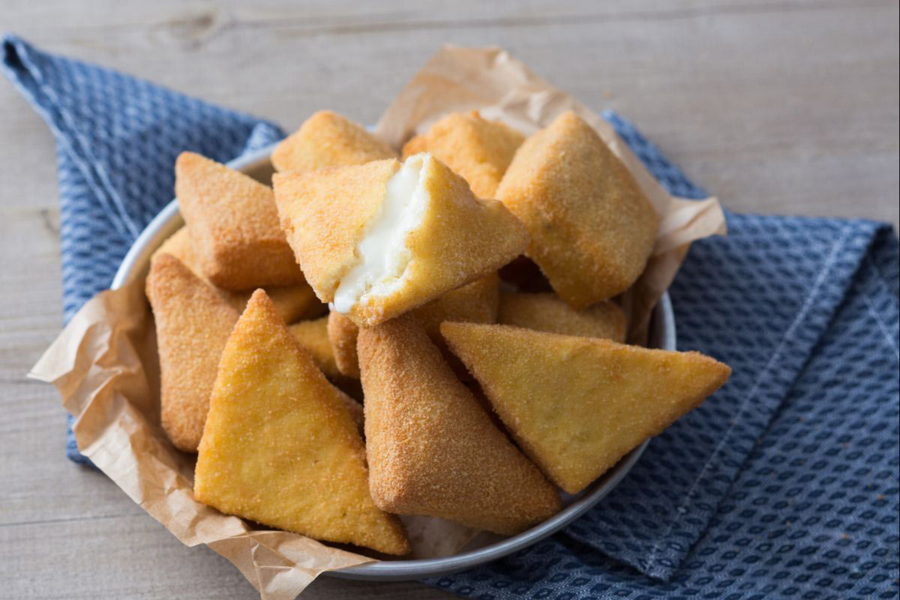
Ingredients
- White bread loaf 12 slices
- Fine salt to taste
- Flour 00 1 cup
- Mozzarella di bufala cheese 500 g - preferably the day before
- Eggs 5
- Breadcrumbs 300 g
Preparation
- To prepare the fried mozzarella, start by cutting the buffalo mozzarella into thick slices (1cm). Place them gradually on a tray lined with blotting paper and cover with more blotting paper.
- Press gently with your hands to blot the mozzarella and remove excess water. If necessary, use paper towels until it is completely dry. At this point, go ahead and stuff the bread.
- Put the slices of bread on a cutting board. Place the slices of mozzarella on top, so as to cover the entire surface, but without letting it stick out, salt and cover each slice with another slice of bread .
- Press gently with your hands to pack it all together. Continue like this for all the other slices of bread, until you finish the mozzarella. Then trim the slices of stuffed bread using a knife, to remove the outer crust. At this point you can cut the mozzarella in the bread in two different ways. By cutting a cross you will get 4 squares from each slice.
- For a triangular cut you have to cut the bread first in half on the diagonal and then in half on the other diagonal. This way you will get 4 triangles. Continue this way until all the pieces are finished. Now switch to the breading. Break the eggs into an oven dish and beat them with a whisk for a few minutes.
- On two other baking dishes place the breadcrumbs in one and the sifted flour in the other. At this point dip each piece of stuffed bread first into the flour and then using 2 forks into the egg, to coat them completely. Then set them on a plate for a few seconds to remove the excess egg part nd avoid lumps when you dip it in the breadcrumbs.
- Transfer to a cutting board and with the blade of a knife lightly press the edges and the surface in order to even out the breadcrumbs and make a more precise shape. If necessary, dip it in the breadcrumbs again and press again with the knife blade. Continue in this way for all the other pieces and transfer them gradually to a tray lined with baking paper. Then place in the fridge for about 30 minutes.
- After the breaded mozzarella has set, you can start with the second breading, first dip into the egg, then set in the saucer to remove the excess and finally dip in the breadcrumbs. As previously, then transfer the pieces of breaded mozzarella onto a cutting board and with the blade of a knife even out the breadcrumbs. Continue this way for all the others by placing them on a tray lined with baking paper. Store in the fridge to set for another 30 minutes.
- Pour the oil into a frying pan and bring it to a temperature of 170-180°C maximum. Put in a few pieces at a time and cook the fried mozzarellas for 1-2 minutes, turning them from time to time with a skimmer. When they are well browned, drain them from the oil and put them on a tray lined with absorbent paper to remove the excess oil. Fry the others and serve.
Tips
To prepare fried mozzarella i recommend using mozzarella opened the day before, so it will be drier. This way it will not spill out during cooking.
Miniature pizzas
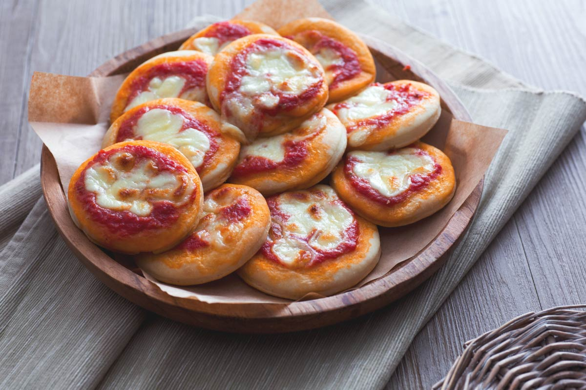
Ingredients
- Water 1 cup - at room temperature
- Fresh brewer's yeast 1 tsp
- Extra virgin olive oil ⅓ cup
- Flour 00 4 cups
- Sugar 3 tsp
- Fine salt 1 tsp
- Tomato puree 1 ⅓ cup
- Mozzarella cheese 250g
- Black pepper to taste
- Oregano to taste
Preparation
- To prepare miniature pizzas, first place the flour in a bowl together with the crumbled fresh brewer's yeast. Add water at room temperature and stir with a wooden spoon.
- Add sugar, salt and pour in oil.
- Mix the ingredients thoroughly, then transfer to a work surface and knead vigorously until smooth.
- Form a ball with the kneaded dough, oil a large bowl and place the dough in it, cover with plastic wrap and let it rise for about 3 hours at room temperature, away from drafts or in an oven with the light on. Once the dough has risen, it will have tripled in volume.
- In the meantime, prepare the pizza topping: in a bowl pour the tomato, season with salt, pepper, oregano and oil. Mix everything with a spoon and set aside until you need to use it.
- Transfer the leavened dough onto a pastry board and sprinkle with very little flour; roll out with a rolling pin until you obtain a rectangle about 4 mm thick.
- Oil thoroughly the drip pan where you will cook miniature pizzas. Cut the dough with a 7.5 cm diameter round pastry cutter. Take the excess dough, give it a round shape and let it rest covered for about 10 minutes. You can knead any excess dough and make more pizzas: you will get a total of 24 miniature pizzas! Take them one by one with a spatula and start placing them on the baking tray.
- Once the miniature pizzas are on the tray, apply some pressure in the center, leaving a 0.5 cm edge. Cut mozzarella cheese into cubes and season the center with tomato and mozzarella cubes, drizzle with oil and a pinch of oregano to taste. Bake the miniature pizzas in a static oven preheated to 200°C: the first 10 minutes with the tray on the lower shelf; the remaining 5 minutes on the top shelf. Once cooked, take out the red miniature pizzas and serve them hot!
First courses
Fusilli pasta with pistachio pesto and cherry tomatoes
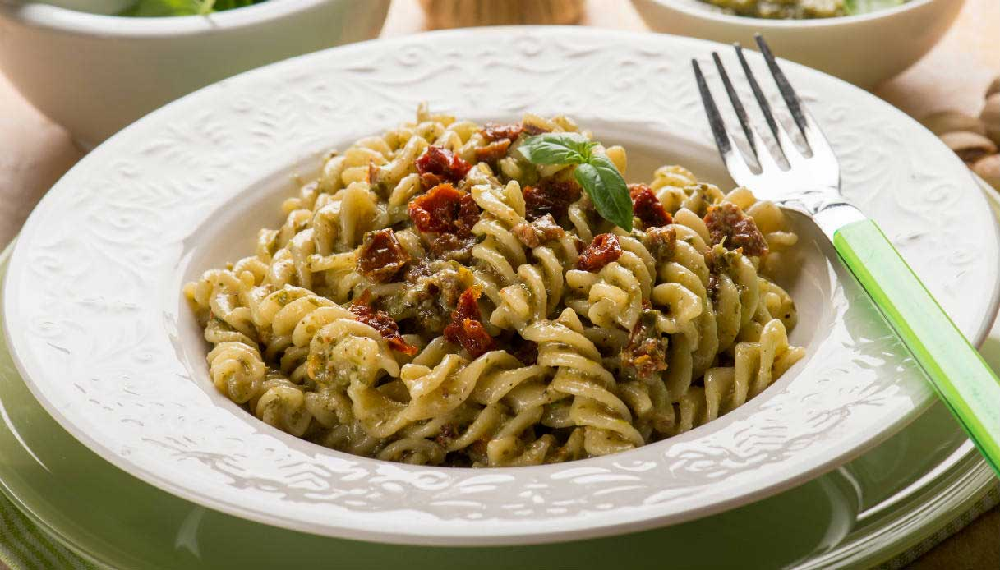
Ingredients
- Fusilli pasta 300g
- Fine salt to taste
- Extra virgin olive oil ⅓ cup
- Cherry tomatoes 500g
- Pistachios 100g
- Black pepper to taste
- Garlic 1 clove
- Parmigiano Reggiano DOP cheese - grated
Preparation
- To prepare the fusilli pasta with pistachio pesto and cherry tomatoes, begin with the pesto: Take the shelled pistachios and blanch them in boiling water for 5 minutes, drain, and remove the dark skin. Place the pistachios in a food processor and add oil.
- Add the grated Parmigiano Reggiano cheese, the zest of half a lemon, half a clove of garlic, room-temperature water, salt and pepper, and the basil leaves. Blitz until you get a smooth paste. Now transfer the pistachio pesto to a bowl and set aside. In the meantime, boil the water for the pasta and add salt once it’s reached a boil. Then move on to the leek: Remove the root part.
- Discard the tough outermost layer of the leek and slice the rest into rounds. Fry the leek in a pan with a little oil.
- To keep the leek from burning, add hot water directly from the pasta pot to the pan and let it stew. Wash the cherry tomatoes under running water and cut them into quarters, then add to the leek.
- Season with salt and pepper and cover the pan with a lid. Leave everything to cook over moderate heat for 10 minutes. The cherry tomatoes will break down to form a sauce. Add salt to the pasta water and bring it to a boil: Pour in the fusilli and cook for the time stated on the package.
- By now, the sauce will be ready: Turn off the heat and add the pistachio pesto, stir, and pour over a ladleful of the pasta cooking water to combine everything well.
- Drain the fusilli and pour into the pan with the sauce, then turn up the heat for a few moments as you coat everything in the sauce. Serve your fusilli pasta with pistachio pesto and cherry tomatoes.
Spaghetti frittata
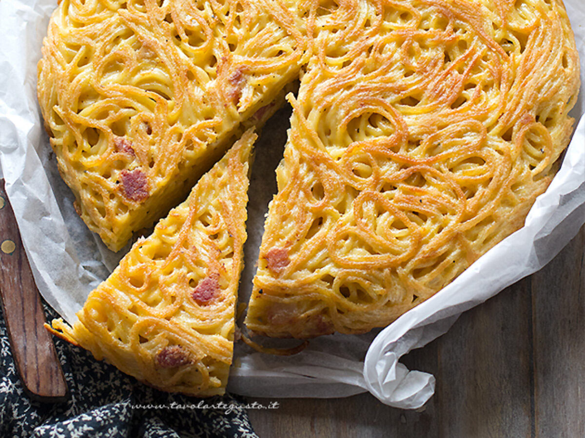
Ingredients
- Spaghetti 350g
- Whole milk 100g
- Smoked scamorza cheese 100g
- Thyme 1 sprig
- Extra virgin olive oil to taste
- Eggs 5
- Parmigiano Reggiano DOP cheese - for grating
- Smoked pancetta 50g
- Black pepper 1 pinch
Preparation
- To make spaghetti frittata, first place a pan full of salted, it will be used to cook the pasta. Meanwhile, make the filling: dice the smoked bacon and scamorza cheese. As soon as the water boils, pour in the spaghetti and cook them until very firm to the bite.
- Pour the eggs into a large bowl, add the thyme leaves and milk, then salt and pepper. Season with grated cheese and mix well to obtain a homogeneous mixture. Incorporate the filling and stir again.
- As soon as the pasta is cooked, drain it in a bowl and season it with a drizzle of olive oil. Add the pasta to the filling and stir again to blend. Take a flared round pan.
- Distribute them evenly with a spatula, then cook over a high heat for 1 minute so that the base hardens, then lower the heat, cover with the lid and cook for 15 minutes.
- It's time to turn the frittata: shake the pan to make sure it is detached from the bottom, place a plate of the diameter of your pan on top of the frittata, turn the pan upside down and cook uncovered for another 5 minutes. The frittata is ready, enjoy it sliced warm or cold!
Spaghetti with clams
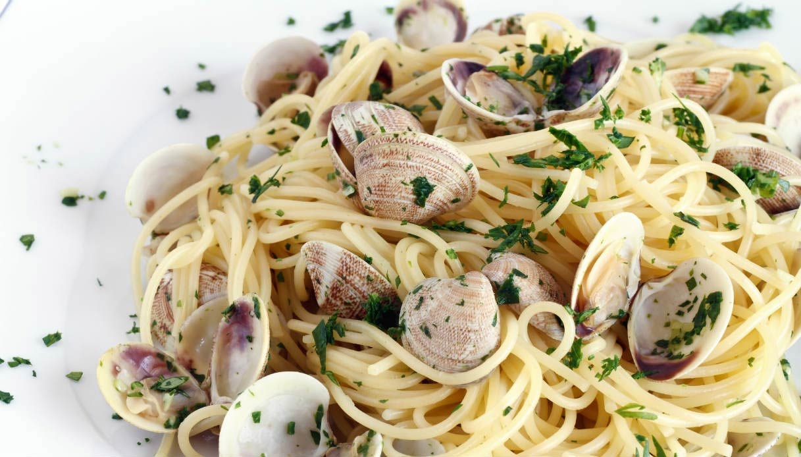
Ingredients
- Spaghetti 350g
- Garlic 1 clove
- Extra virgin olive oil to taste
- Fine salt to taste
- Clams 1 kg
- Parsley 1 small bunch
- Black pepper to taste
- Coarse salt to taste - for the clams
Preparation
- To make spaghetti with clams, start by cleaning the clams. Make sure there are no broken or empty shells which have to be discarded. Then beat them against the sink or on a cutting board. This step is important to check that there is no sand inside: healthy clams will remain closed, while those full of sand will open. Then place them in a colander over a bowl and rinse them. Place the colander in a bowl and add plenty of coarse salt. Let the clams soak for 2-3 hours.
- Once the time has passed, the clams will have purged any residual sand. Heat some oil in a pan. Then add a clove of garlic and, as the oil takes on flavor, drain the clams well, rinse them, and plunge them in the hot pan. Cover with a lid and let them cook for a few minutes over high heat.
- The clams will open with heat, so shake the pan from time to time until they are completely open. As soon as they are all open, turn off the heat immediately, otherwise the clams will cook too much. Collect the juice by draining the clams, and do not forget to discard the garlic. In the meantime, cook the spaghetti in plenty of boiling salted water and drain halfway through the total cooking time of the spaghetti.
- Then pour the sauce into a pan, add the spaghetti, and continue cooking using some cooking water. Your pasta will finish cooking in the pan. When cooked, add the clams and chopped parsley. Heat everything on high for a few seconds and the spaghetti with clams is ready: serve immediately!
Main courses
Beef tagliata
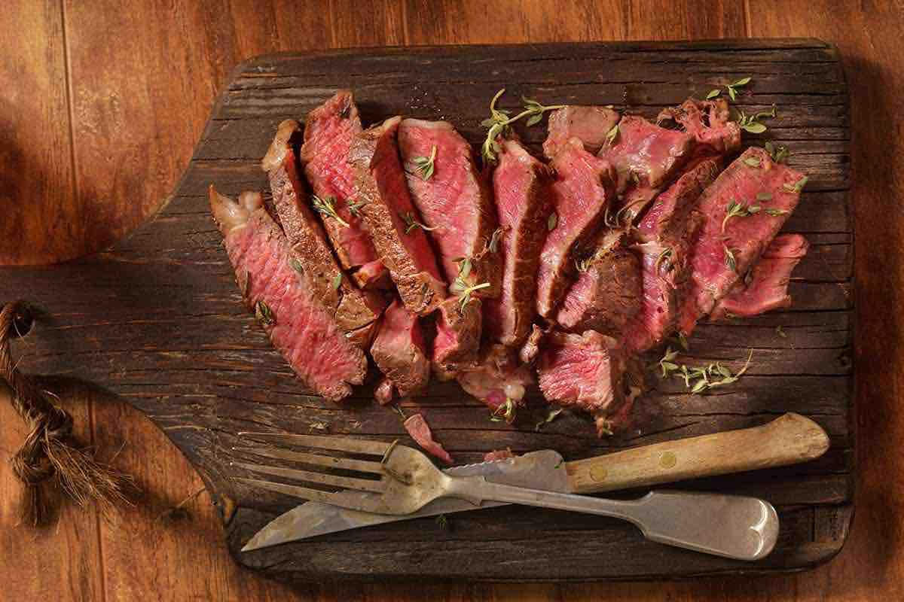
Ingredients
- Entrecôte 800 g
- Cherry tomatoes 100 g
- Black pepper to taste
- Arugula 100 g
- Salt to taste
- Extra virgin olive oil to taste
Preparation
- To prepare sliced beef tagliata with arugula and cherry tomatoes, make sure to take the piece of entrecôte out of the fridge at least one hour before cooking, as the meat must not be cooked cold. Wash and dry the arugula well. Then wash and cut the tomatoes in half. Move on to the meat: remove the fat (if present) from the surface, then divide the piece of meat into slices about 4 cm thick.
- Heat the grill and let it warm up nice and hot. When the grill is hot, lay a piece (or maximum two) of meat, then reduce the heat, to medium-high and cook for about 3 minutes on that side. Then you can turn the meat with tongs (do not use a fork, so as not to pierce it and let the juices come out) and cook for another 3-4 minutes. To ensure that the cooking is rare, you can use a kitchen thermometer: when the core temperature is around 52-54°C, the meat is ready.
- Take it off the grill and leave it on the cutting board for a minute to let it rest and retain its juices (if you have to leave it longer, cover it with aluminum foil). Then cut crosswise to obtain several slices with a sharp non-serrated knife. Arrange a bed of arugula on a serving plate, the beef tagliata, and some tomatoes. A drizzle of oil, flakes of salt (or coarse salt) and freshly ground pepper. and your sliced beef tagliata with arugula and cherry tomatoes is ready to be served!
Foil-baked sea bream
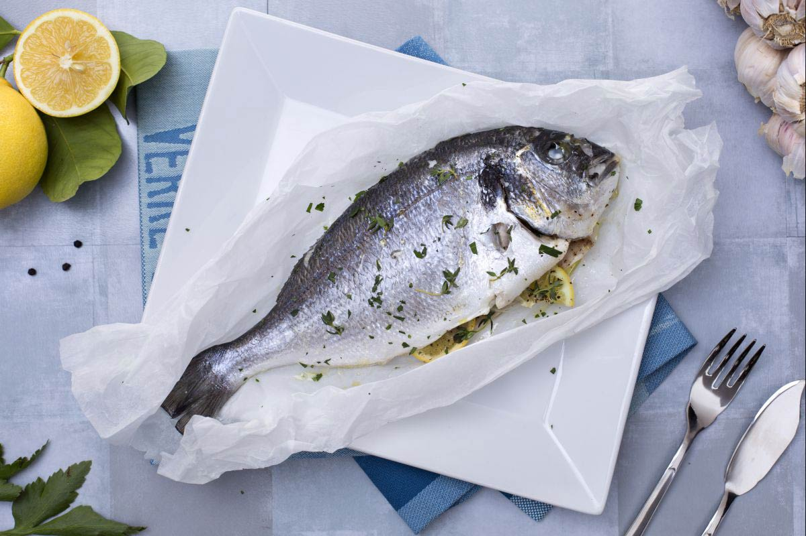
Ingredients
- Sea bream 2 - 450g each
- Fine salt to taste
- Parsley 2 sprigs
- Extra virgin olive oil 20g
- Garlic 1 clove
- Black pepper to taste
- Thyme 1 sprig
- Lemons 1 slice
Preparation
- To make foil-baked sea bream, if your sea bream requires cleaning, proceed as follows: cut the belly with scissors and proceed straight up to below the head, then pull out the innards. Wash the belly of the fish well under running water to remove all traces of blood. Using the same scissors, cut first the side fin near the head, the tail fin under the belly and finally the fin on the back of the fish. Turn the fish to the other side and remove the other fin and tail fin. Using a descaling tool, or the blade of a knife, carefully scale the sea bream, from the tail towards the head. Rinse the sea bream under running water again, washing it carefully also on the outside.
- Wash and mince the parsley. Place a sheet of baking paper on a baking tray and place each clean sea bream in the middle, seasoning the inside with salt 5 and pepper.
- Proceed to stuffing the belly with the herbs: sprigs of thyme previously washed and dried, half a clove of peeled garlic for each sea bream, half a slice of lemon and extra virgin olive oil.
- Drizzle the sea bream with a little olive oil then close the baking paper sheet by rolling up the two ends. Wrap it in aluminum foil and twist the ends to seal.
- Place the sea bream on a baking tray and bake in a static oven preheated to 180°C for about 40 minutes. When cooked, take the sea bream out of the oven, let it cool, then serve it in the foil itself, sprinkling it with fresh parsley if you like.
Saltimbocca alla Romana
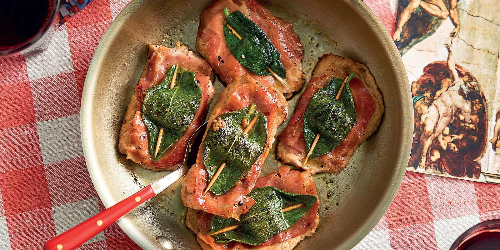
Ingredients
- Sliced veal 300 g - 4 slices of veal
- Sage 4 leaves
- White wine 100g
- Flour 00 50g
- Water 20g
- Prosciutto crudo 40g - 4 thin slices
- Butter 50g
- Black pepper to taste
- Extra virgin olive oil 20g
Preparation
- To prepare the saltimbocca alla romana, start by slicing the veal nut, then place each slice on a cutting board, remove any nerves and fat and then beat it with a meat tenderizer to make it thin. Place a thin slice of prosciutto in the middle and a sage leaf.
- Use a toothpick to keep the ingredients together. Pour a cup of butter into a pan and melt over medium-high heat.
- Flour the slices of meat on one side only and gradually place them in the pan with the sauce, increase the temperature so that the saltimbocca are golden brown. Pepper to taste, but do not salt because the prosciutto will make the dish tasty.
- When the meat is golden underneath, blend with the white wine and let it evaporate. As soon as the alcohol has evaporated completely, cover with the lid and cook for another minute. Transfer the saltimbocca to a plate and keep them warm.
- Now take care of the accompanying sauce: add 20g of butter and water in the same pan with the cooking liquid of the meat. Reduce until you have created a slightly dense cream.
- Now spread the cream on the bottom of a serving plate and place the slices of meat on top. The saltimbocca alla romana are ready to serve.
Desserts
Chocolate cake
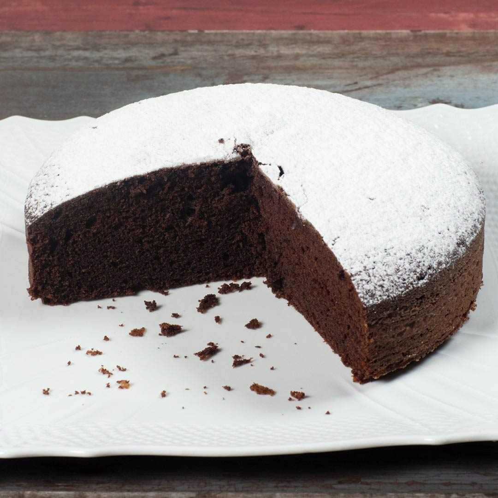
Ingredients
- Dark chocolate 150 g
- Flour 00 180 g
- Eggs 6 - at room temperature
- Baking powder 8g
- Unsweetened cocoa powder 50g
- Sugar 180g - granulated
- Butter 200g - at room temperature
- Fine salt 1 pinch
Preparation
- To prepare the chocolate cake, first roughly chop the dark chocolate, then melt it in a microwave or bain-marie and let it cool, stirring occasionally.
- Cut the butter (at room temperature) into cubes and pour it into a mixer bowl, together with the sugar. Start the machine at medium speed with the beater and work the butter until it is reduced to a cream. Now break the eggs into a bowl and put one egg into the mixer bowl at a time, make sure the egg is completely absorbed before adding the next one.
- Continue in this way until you get a soft and homogeneous cream. Pour the now lukewarm chocolate directly into the bowl of the running mixer and blend wel.
- Add salt to the mixture. Mix the flour with the cocoa and yeast in a bowl 11, then sift it all directly into the chocolate mixture .
- Use a spatula to gently blend the sifted ingredients into the mixture. Line a 22-24 cm round cake pan with baking paper and pour the dough into it.
- Level the surface 16 and bake in a static oven preheated to 180° C for about 40-45 minutes (if you use a ventilated oven bake at 160°C for about 35 minutes). To check the baking, test it with a toothpick: if you stick it in and it emerges dry, it means that the cake is done; if not, continue baking for a few minutes. Once baked, take out the chocolate cake and let it cool before removing it from the pan. Then place it on a rack to cool completely before serving.
Chocolate salami
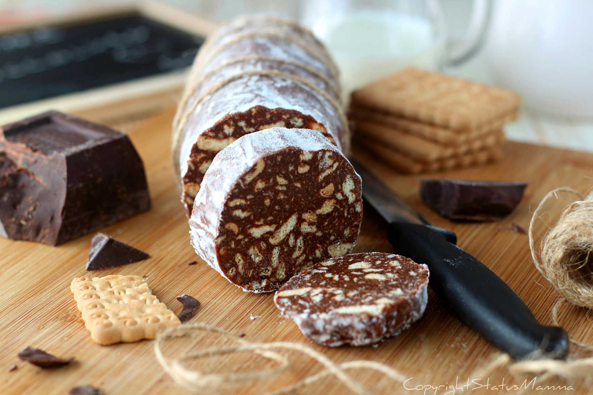
Ingredients
- Dark chocolate 200 g
- Butter 150g - at room temperature
- Eggs 6 - at room temperature
- Eggs 2 (100g) - at room temperature
- Cookies 75g
- Sugar 150g
- Rum 10g
- Powdered sugar to taste - to decorate
Preparation
- To make the chocolate salami, first chop the chocolate with a knife. Melt it in a bain-marie and, once it has completely melted, let it cool.
- In the meantime, place the chopped butter in a bowl at room temperature (it must still be malleable) and whip it with the sugar using a hand mixer. Flavor with rum.
- Pour the lightly beaten eggs one at a time, continuing to beat with electric whisks until the mixture is clear and frothy. Now pour in the melted chocolate at room temperature.
- Continue stirring until the chocolate is well mixed. Now take the cookies and coarsely crumble them with your hands into a bowl, then add them to the chocolate, and stir to mix together.
- Transfer the dough to a sheet of baking paper, use the spatula to distribute the dough in a sausage shape.
- Lift one of the two ends of the sheet, bring it towards the center and roll the salami until it is completely wrapped with baking paper.
- Fold the two side paper flaps so that the salami is tightly closed. Place the salami on a tray and leave it in the fridge to harden overnight. Once the chocolate salami has hardened, you can tie it with twine and sprinkle with powdered sugar.
Pastry cream
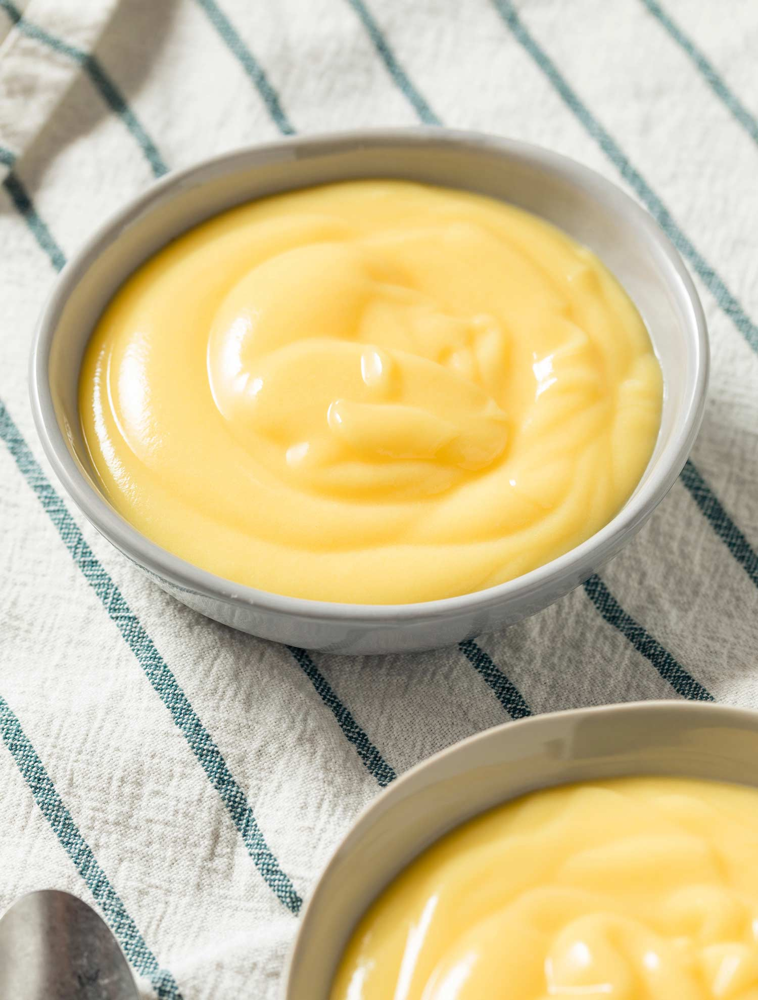
Ingredients
- Whole milk 500g
- Egg yolks 125g
- Vanilla bean 2
- Sugar 130g
- Rice starch 40g
- Lemon peel 1
Preparation
- To prepare the pastry cream first put a glass bowl in the freezer. Now cut the seeds out of the vanilla pods and cut the pods into pieces. Pour the milk into a pan and add both the seeds and the vanilla pods.
- Cut the rind from the lemon, taking only the yellow part, and put it in the pan. Turn on the burner and heat it all together at a boil, stirring from time to time. In another saucepan, pour the yolks, sugar and rice starch. Using a soft whisk, stir to obtain a smooth, creamy consistency.
- As soon as the milk is close to boiling, add it into the yolks in parts, filtering it with a strainer and constantly stirring with a whisk. Put back on the burner and stir continuously until it thickens.
- To cool it quickly, take the bowl out of the freezer and pour the cream inside. Stir with a whisk very quickly, until you have brought the cream to 50°C, below the cooking point. You need to have a smooth and very shiny cream. At this point the custard is ready, you can use it or store it in the fridge by covering it with plastic wrap.
Back to top